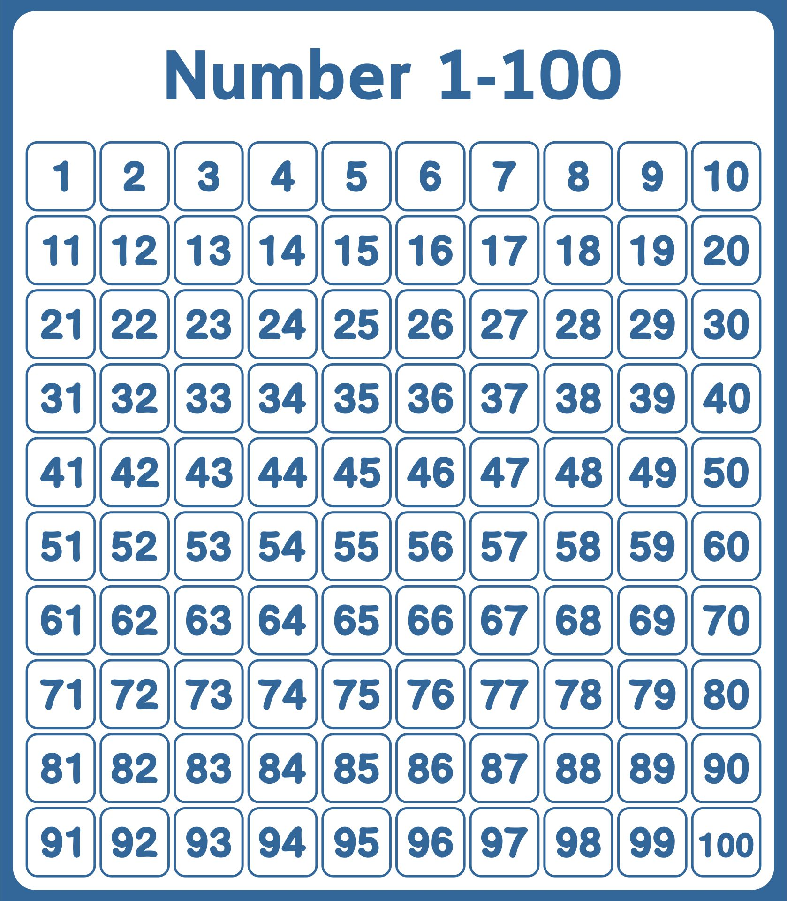

Jogo em JavaScript
Jogo de apostas de numero aleatório
Neste segundo exemplo, manteremos um exercicio com um nível médio de abstração, onde programa JS escolherá um número aleatório
e nosso trabalho será, advinhar qual é esse número em no máximo 6 chances.
Ao final do escript que segue abaixo, se encontra uma breve explicação sobre nosso programa.
6 chances para 100 com JavaScript
Número:
Erros: 0
Chances: 6
Dica: É um número entre 1 e 100
Explicação do Escript
Neste exemplo estruturamos um arquivo HTML com as propriedades input para obter o número apostado pelo usúario
durante cada uma das 6 chances de apostas, utilizamos button para criar os botões que controlariam as sequencias
do programa.
o Arquivo JS foi estruturado da seguinte forma:
três vetores foram usados para organizar o programa
1 variável para o número aleatório gerado pelo programa
1 constante para o número de chances
1 vetor para o número de erros
não é do escopo do site, demonstrar linha por linha o funcionamento do código, para mais informações tecnicas e exemplos
visite nossa página no Git-Hub ou entre em contato, pela página inicial ou pela aba contato.
Repositório com exemplo do jogo: Jogo descubra o número